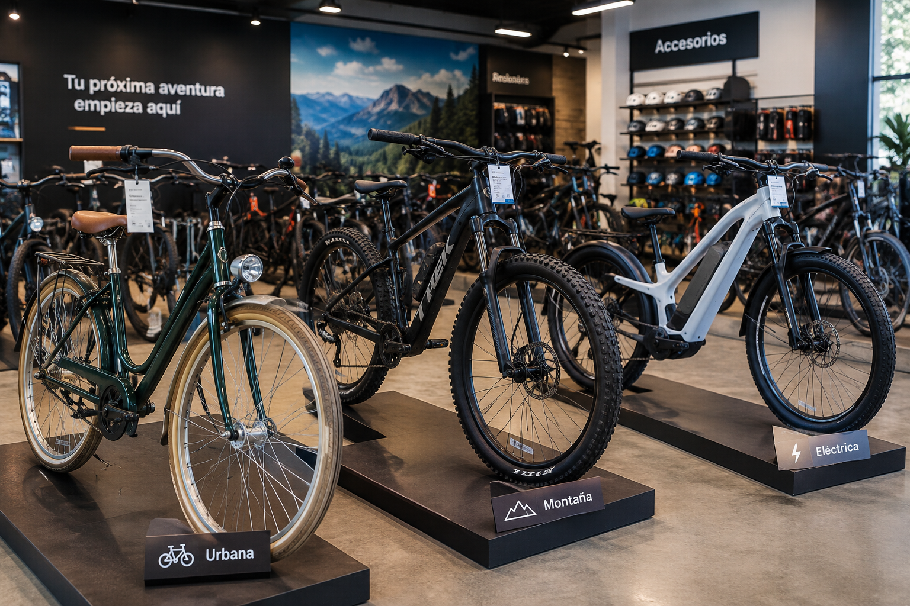

Alquiler de bicicletas
¡Explora la ciudad a tu propio ritmo! Ofrecemos un servicio de alquiler de bicicletas para que disfrutes de paseos, recorridos turísticos y aventuras al aire libre. Contamos con diferentes opciones para adaptarnos a tus necesidades, ya sea que quieras dar un paseo tranquilo o recorrer mayores distancias. Nuestro objetivo es que disfrutes de una experiencia cómoda, práctica y divertida sobre dos ruedas.